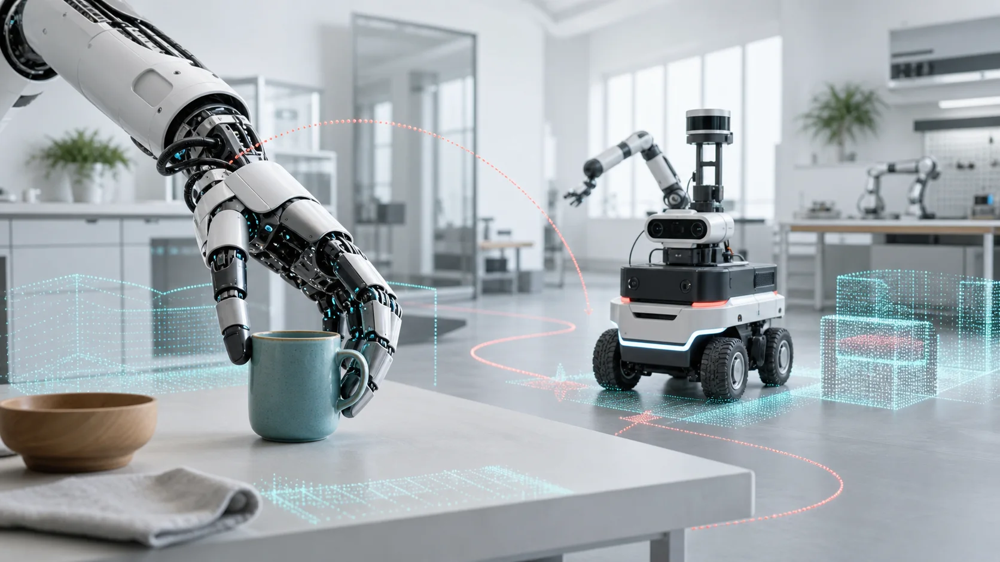

Some Recent Works on Embodied Intelligence
- Ziyi Wang, Peiming Li, Hong Liu, Zhichao Deng, Can Wang, Jun Liu, Junsong Yuan, Mengyuan Liu, Recognizing Actions from Robotic View for Natural Human-Robot Interaction, IEEE International Conference on Computer Vision (ICCV), 2025.
- Qiuchi Xiang, Haoxuan Qu, Hossein Rahmani, Jun Liu, NDPP-Grasp: Non-Differentiable Physical Plausibility Constraint-Guided Task-Oriented Dexterous Grasp Generation, arXiv preprint, 2026.
- Jian Liu, Wei Sun, Kai Zeng, Jin Zheng, Hui Yang, Hossein Rahmani, Ajmal Mian, Lin Wang, Scalable Unseen Objects 6-DoF Absolute Pose Estimation with Robotic Integration, IEEE Transactions on Robotics (T-RO), 2026.
- Jian Liu, Wei Sun, Hui Yang, Jin Zheng, Zichen Geng, Hossein Rahmani, Ajmal Mian, MonoDiff9D: Monocular Category-Level 9D Object Pose Estimation via Diffusion Model, IEEE International Conference on Robotics and Automation (ICRA), 2025.
- Ming Wang, Haoxuan Qu, Qiuhong Ke, Wei Zhou, Hossein Rahmani, Jun Liu, Translating Signals to Languages for sEMG-Based Activity Recognition, IEEE Conference on Computer Vision and Pattern Recognition (CVPR), 2026.